What really is the sim-to-real gap?
TL;DR With GPT-6 Astra one-shotting 3D scenes, simulation is all the hype. But a simulator works only if whatever happens inside it would happen outside, thousands of times over. Every major open-source engine we tested breaks this promise. Over the past month we found about 30 bugs in open-source physics engines. Most bugs never raise an error, they just quietly corrupt your models and surface later as the infamous sim-to-real gap.
The worst ones appear at scale, when you run billions of steps. More worlds change the physics, objects get launched, and cables and cloth don’t behave like real materials. We found them in Newton, MuJoCo Warp and MuJoCo, and reported 20 upstream.
1. More worlds, different physics#
A ten-cube tower stands on its own. Run it in thousands of worlds at once, and most of the copies fall.

MuJoCo Warp, CG solver: 0 of 16 copies fall, then 92 of 256, 882 of 1,024 and 4,031 of 4,096.
Why? Each cube rests on four corner contacts. On a CPU, the forces at those corners are added up in the same order every step, so they stay perfectly even and the tower never starts to rock. On a GPU, thousands of threads add them in whatever order they finish, so the corners come out a hair uneven, the tower starts to rock, and the rocking grows. The more worlds share the GPU, the more that order gets shuffled, and the more towers fall.
Worlds also leak into each other. In MuJoCo Warp, every world wrote its bounding box to one shared slot, and a ball fell through its own table (#1795; fix #1800 by another contributor).

In Newton’s MPM solver, changing the other worlds moved world 0 by up to 0.1 mm (#5207).
What it does to training: the more worlds you run, the further your physics drifts from the one world you debugged.
In our own runs on a tower-stacking task, training was smooth when the towers stood and erratic when they fell at scale:

Training loss on block stacking.
2. Rare poses stop being rare#
A small block sits still on a board. Nothing touches it. Then, in a single step, the engine shoots it straight down through the board at several metres per second.

Every step, the engine asks two questions about each pair of objects: are they touching, and which way should they push apart? For this block, MuJoCo Warp’s general routine gets it upside down. It says the block is 27.7 mm inside the board, not 0.009 mm, and should be pushed down, not up. So it pushes it down, hard. MuJoCo, and MuJoCo Warp’s own box routine, get it right.
What it does to training: it only goes wrong at a few exact heights, so a test that checks a handful of poses never hits them. A training run that tries billions of poses hits them again and again, and the policy learns that blocks sometimes explode. We reported it as #1883; two open fixes from other contributors, #1845 and #1866, solve it together.
3. The tasks that need scale most get the worst physics#
Cables and cloth are why you need millions of rollouts: they have more ways to move than any rigid object. They are also where the engines are furthest from reality.
Stiff cables sag 40 % too far (Newton, VBD solver1). VBD corrects one body at a time, so a correction crawls one segment per sweep. Our #4795 solves each rod at once and lands within 1–2 % of the exact shape.

A cloth pile sinks through the floor (Newton, VBD with self-contact). Nothing pushes it. It just sinks, until 271 of its 1,681 particles are below the ground, the lowest 74 mm down (#5143).

What it does to training: a policy that learns to route a cable or fold a towel, at scale, learns a material that doesn’t exist.
If you train at scale, check this#
- Run one scene at 1 and at 4,096 worlds. The physics must match.
- Scan awkward poses: thin things resting on each other, shallow overlaps, edges across edges.
- Check momentum: push a free object with a known impulse. Its momentum must change by exactly that.
- Size contact buffers yourself and check them for overflow every step.
- Test soft things at your real mesh size.
- In MuJoCo Warp, route box pairs to the box-box routine (turn
NATIVECCDoff) until #1845 and #1866 land.
What’s next#
These bugs share one cause. The engines are tuned for scenes where a millimetre doesn’t matter, nobody reruns a world, and speed is measured on falling boxes. That is the right tuning for most of their users, and the wrong one for training robot hands at scale. So we are building Alloy, a physics engine for robot hands at scale, around the checks above. It launches soon.
Footnotes#
Every report links a script that reproduces it.
References#
-
Anka He Chen, Ziheng Liu, Yin Yang, Cem Yuksel. “Vertex Block Descent.” ACM Transactions on Graphics (SIGGRAPH), 2024. arXiv:2403.06321. ↩
Citation#
Please cite this work as:
@article{gupta2026scale,
author = {Pranay Gupta},
title = {{Your physics engine breaks at scale}},
journal = {codnay.github.io},
year = {2026},
month = {November},
url = {https://codnay.github.io/blog/sim-to-real-gap/},
}